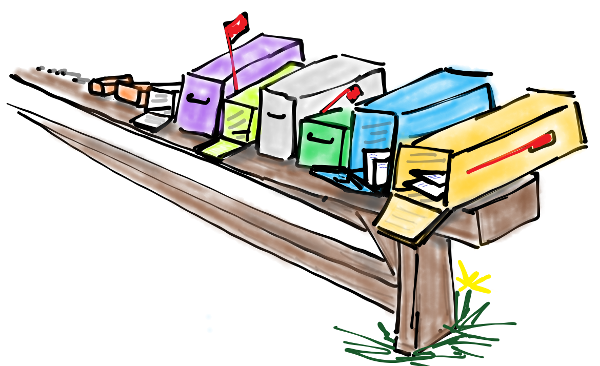
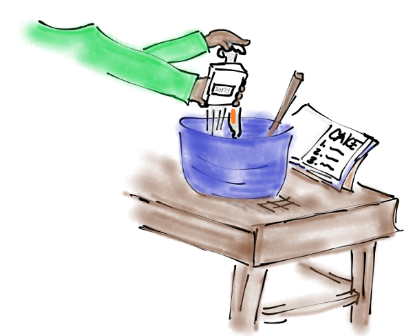

There is a long-standing tradition in programming that your first program should say "Hello World". Here's the simplest rholang code to put that text on the screen.
Include hello.rho here
Your turn
Before I even explain anything, do some experimentation.
Make the program print "Rholang rocks!" instead of "Hello World".
Try to change "stdout" to something else. Any results?.
We're casual here. Make th program say "Sup World" on the screen.
WTH is "stdout"?
Channels are like mailboxes for sending messages.
The heart of rholang is communication on channels. Channels are communication lines that you use to send and receive messages. To send a message on a channel, you use the ! character.
TODO `channelName!message` (Make this an annotated diagram)
@"stdout" is a special channel that is used to send text to "standard out" which usually just means your computer screen.
Using other channels

Sent messages wait to be received here in "message purgatory"... JK, it's called the "tuplespace"
You can actually send messages on lots of channels, not just @"stdout". But unlike @"stdout" they won't display on the screen.
So where do the other channels go then? Nowhere! Not yet anyway. The messages just sit there waiting for someone to receive or "consume" them. We'll learn how to consume messages in the next lesson. The place where messages sit in the meantime is called the "tuplespace".
Remember when you tried it a few slides ago? Try that again and make sure your message is sitting in the tuplespace.
include tupleSpace.rho
include screenshot of looking at the tuplespace
Doing two things at once

Rather than following an ordered list, all ingredients are added concurrently. Looks delicions.
In rholang we don't tell the computer to do one thing, then another, then a third. Rather we tell it all the things to do, and it does them "concurrently" or all at once.
Include parallel.rho
The | is pronounced "parallel", or "par" for short.
Your turn again
Now try this
Send the message "1 large peperoni please" on a channel called "pizza shop".
Send "Hi Mom" on the channel "Mom's Phone".
Print two messages, "Rick" and "Morty", on the screen in one program.
Quiz
What will @"stdout"!("Programming!") print to the screen?
What channel does @"what"!("Up") send a message on?
Which does rholang do first in
```
@"stdout"!("Dogs")
|
@"stdout"!("Cats")
```
* Print Dogs
* Print Cats
* Trick Question
There is also a special channel called @"stderr". Check out what happens when you send to it. What's the difference?